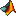

 equalizeMuscleActivity | EQUALIZEMUSCLEACTIVITY Divide each channel of aligned strides by a weight. |
| extractMuscleActivityFromEMG | EXTRACTMUSCLEACTIVITYFROMEMG Estimate the EMG amplitude envelope. |
| filterEMG | FILTEREMG Band-pass and notch filter EMG with zero phase. |
| flipEMGdata | FLIPEMGDATA Swap the halves of the phase dimension for half the muscles. |
| getSymmetry | GETSYMMETRY Difference between the two halves of an array. |
| getVarianceDecomposition | GETVARIANCEDECOMPOSITION Split EMG energy into mean, shape, and noise. |
| procEMGhealthCheck | PROCEMGHEALTHCHECK Plot processed EMG of every trial for a visual check. |
| rawEMGhealthCheck | RAWEMGHEALTHCHECK Estimate noise and signal levels of raw EMG. |
| whitenEMG | WHITENEMG Estimate whitening filters for EMG channels. |
 Master index
Master index